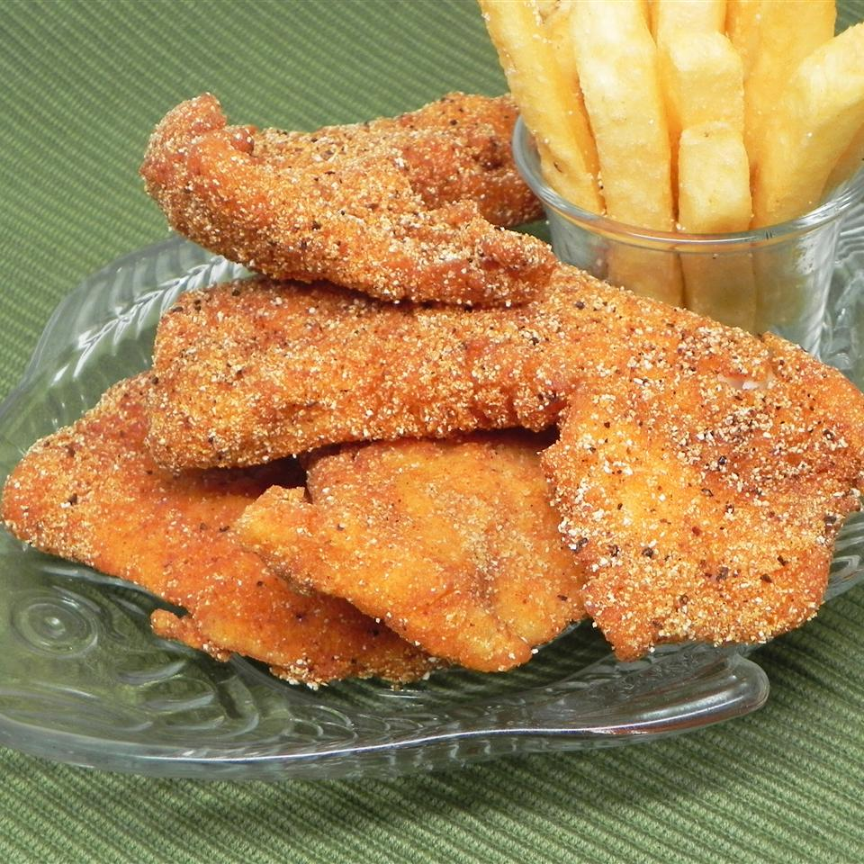

Fried Catfish
Catfish

Southern Fried Catfish
A staple of any southern dinner table, Fried Catfish
is a simple and delicous meal for those nights you
dont want to spend eons prepping and cleaning.
Ingredients
- .5 cup buttermilk
- .5 cup water
- salt and pepper to taste
- 1 pound catifsh fillets
- 1.5 cups fine cornmeal
- .5 cup all purpose flour
- 1 teaspoon Old Bay
- 1 quart vegetable oil
Directions
- Mix buttermilk, water, salt, and pepper in a small bowl. Pour mixture onto a pan large enough to hold the fillets.
Arrange fillets in a single layer and flip to coat each side, set aside to marinate.
- Combine cornmeal, flour, and seasoning in a resealable plastic bag, add fillets to bag a couple at a time, and
gently tumble for an even coating
- Heat oil in fryer or deep skillet to 365 defgees F
- Fry fillets in batches till goledn brown, around three minutes. Remove, drain, cool, and enjoy!